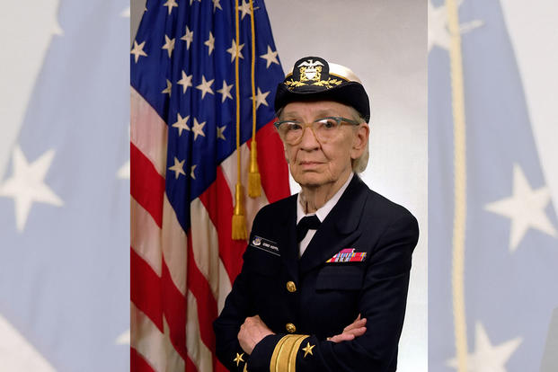

Grace Murray Hopper
Grace Murray Hopper nasceu em Nova Iorque em 9 de dezembro de 1906 — Condado de Arlington foi almirante e, analista de sistemas da Marinha dos Estados Unidos nas décadas de 1940 e 1950, criadora da linguagem de programação de alto nível Flow-Matic — base para a criação do COBOL — e uma das primeiras programadoras do computador Harvard Mark I em 1944.

Infância
Grace Murray nasceu na cidade de Nova Iorque, sendo a mais velha de três irmãos. Seus pais, Walter Fletcher Murray e Mary Campbell Van Horne, eram de descendência Escocesa e Holandesa e cursaram o West End Collegiate Church. Seu bisavô, Alexander Wilson Russell, um almirante da Marinha Americana, lutou na Batalha da Baía de Mobile, durante a Guerra de Secessão.
Foi sempre foi uma criança curiosa, um traço que a marcou pela vida. Aos sete anos decidiu descobrir como funcionava um despertador. Desmontou sete despertadores antes que sua mãe percebesse o que estava fazendo - aí Grace foi autorizada a mexer em apenas um despertador.
Juventude
Grace Hopper foi à Hartridge School em Plainfield, Nova Jersei. Foi inicialmente rejeitada no processo de admissão no Vassar College aos 16 anos (suas notas em latim eram baixas), sendo admitida no ano seguinte. Graduou-se em 1928 como bacharel em Matemática e Física e, em 1930, concluiu seu mestrado na Yale University. Em 1934, também na Yale University, conquistou seu Ph.D. em Matemática sob a orientação de Oystein Ore. A dissertação dela "Novos Critérios de Irredutibilidade" foi publicada no mesmo ano. Começou a ensinar Matemática no Vassar em 1931 e foi promovida a professora associada em 1941.

Vida adulta
Hopper tentou se alistar na Marinha no começo da Segunda Guerra Mundial, mas foi rejeitada por algumas razões. Com 34 anos, ela era muito velha para se alistar e o seu Índice de Massa Corporal (IMC) era muito baixo. Outra razão foi a determinação de que o seu emprego como matemática e professora de matemática na Faculdade Vassar eram valioso demais para o esforço da guerra.
Em 1943, Grace tirou uma licença de Vassar e foi empossada na Marinha dos Estados Unidos. Foi uma das várias mulheres a se voluntariar no WAVES. Precisou de uma autorização excepcional para alistar-se, pois estava 6,8 kg abaixo do peso mínimo exigido pela Marinha (54 kg). Apresentou-se em Dezembro, e treinou na Escola Naval Reserve Midshipmen's do Smith College em Northampton, Massachusetts. Formou-se em 1944 como a primeira da turma e foi designada para a Bureau of Ships Computation Project da Harvard University como tenente júnior.
Ela serviu na equipe de programação Mark I computer dirigida por Howard H. Aiken. Hopper e Aiken escreveram três artigos sobre o Mark I, também conhecido como a Calculadora Automática Controlada por Sequência. O pedido de transferência de Hopper para a Marinha regular no final da guerra foi recusado devido à sua idade (38 anos). Continuou a servir na Reserva da Marinha e permaneceu no Laboratório de Computação de Harvard até 1949, recusando uma cátedra em Vassar para trabalhar como pesquisadora num contrato da Marinha na Harvard University.
Em 1952 teve um compilador operacional, o qual na época era referido como um compilador. Posteriormente, ela disse que "Ninguém acreditava nisso," e disse que tinha um compilador rodando e ninguém o tocava. Eles me diziam que computadores apenas podiam fazer aritmética". Ela vem falar que o seu compilador "traduzia manipuladores. Poucas pessoas são realmente manipuladores de símbolos. Então decidi que processadores de dados deveriam conseguir escrever programas em inglês, e que computadores iriam traduzir para linguagem de máquina. Esse foi o começo de COBOL, a linguagem de computação para processadores de dados. A ideia seria que poderia dizer "subtraia a taxa do pagamento" ao invés de tentar escrever isso em código octal ou usando diversos símbolos.
Grace Hopper no console do UNIVAC I, em 1960. Em 1954, Hopper foi nomeada a primeira diretora de programação automática, e seu departamento divulgou algumas das primeiras linguagens de programação baseadas em compilador, incluindo ARITH-MATIC, MATH-MATIC e FLOW-MATIC.riam nos computadores modernos que usamos hoje.
De acordo com os regulamentos de atrito da Marina, Hopper se aposentou da Reserva da Marina com o cargo de comandante com 60 anos no final de 1966. Ela foi chamada novamente para dever ativo em Agosto de 1967 por seis meses que se transformou em indefinido. Ela se aposentou novamente em 1971 mas foi chamada novamente em 1972. Ela foi promovida para capitã em 1973 pelo Admiral Elmo R. Zumwalt, Jr. Depois que o Representante Republicano Philip Crane viu ela em um segmento Março 1983 de 60 Minutes, ele forneceu patrocínio à H.J.Res. 341, uma resolução colaborativa originada na Câmera de Representantes, a qual levou a promoção dela em 15 de Dezembro de 1983 por nomeação especial Presidencial pelo Presidente Ronald Reagan.
